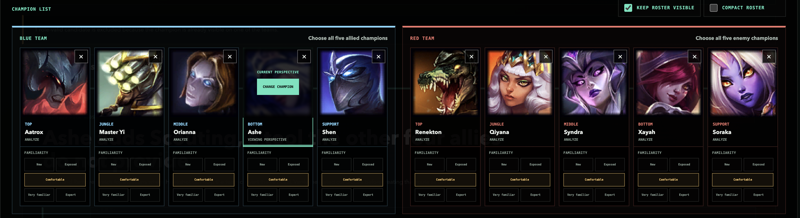

League of Legends strategy · Free tool
Change the pick.
Understand the consequences.
Hermod.gg is our free application for exploring team strategy in League of Legends. Examine a composition, compare choices, and understand the conditions and relationships behind a plan.
Created by Hermod Labs. Built on our strategy engineering platform.
01 / Inspect the decision
A different pick.
A different set of possibilities.
Compare candidate picks and inspect the contributions, conditions, and counterplay behind a composition.

02 / The platform in play
Make the reasoning
part of the conversation.
A pick contributes to a plan through capabilities, conditions, and relationships with allies and opponents. Replacing that pick gives players a reason to reexamine the plan.
Hermod.gg applies our strategy engineering platform to a concrete setting: making strategic reasoning visible enough for people to inspect, discuss, and revise. Players keep the judgment; the tool helps them examine the reasons.